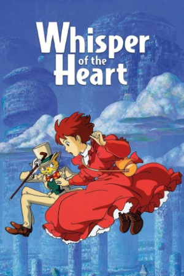

Also known as:耳をすませば (original title)
Country:Japan, 111 minutes
Spoken languages:Japanese
Genres:Animation, Drama, Family
Director(s):Yoshifumi Kondo
Writer(s):Hayao Miyazaki
Video Codec:Unknown
Number: 2762


Certification:G
Storyline:
Shizuku lives a simple life, dominated by her love for stories and writing. One day she notices that all the library books she has have been previously checked out by the same person: 'Seiji Amasawa'.
Cast:

Medium: Original DVD,
Comments: Part of Studio Ghibli Special Edition Collection
Loaned: No
Aspect ratio: Unknown